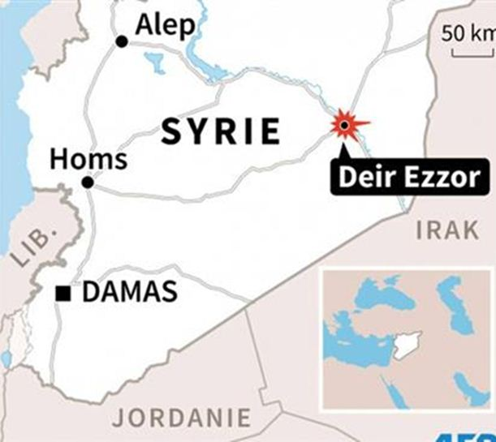

Certains libéraux russes ont tendance à déplorer ce qu’ils disent être les frasques (ou les idioties, selon la personne) de Washington en matière de politique étrangère. J’en connaissais un qui me disait, yeux écarquillés, mains tremblantes, joues gonflées : « Arrête avec la conspirologie, Françoise ! Washington ne cherche pas la guerre, il se fiche éperdument de Poutine, d’Assad, de Ianoukovitch (c’était avant le Maïdan), ce ne sont que de sombres crétins irresponsables (SIC !) ... D’ailleurs, le Kremlin ne vaut guère mieux ». Je me demande si le personnage en question – qui lui est loin d’être un « sombre crétin » – aurait ressorti la même thèse aujourd’hui. N’aurait-il pas choisi un silence décent après les nouvelles « frasques » des USA en Syrie ?
Le 17 septembre, une « bavure américaine » emporte la vie de 62 militaires de l’armée arabe syrienne (AAS) et fait des dizaines de blessés. Quand on sait que plus de 50 pays s’investissent en faveur de la peste salafiste, on comprend mieux qu’au-delà du drame humain, cette simple soi-disant erreur de géolocalisation est une catastrophe militaire et psychologique l’armée étant littéralement minée et saignée par cinq années de guerre sans trêves autres que formelles.
Mais la communauté internationale s’en soucie comme d’une guigne. Le Monde constate que Washington « reconnaît » les frappes de ses forces armées contre l’AAS et que, « semblerait-il », telle quantité de militaires soient morts sur le coup. Après tout, ce ne sont que des Syriens. Loyalistes de surcroît. Le 20 septembre, un convoi du Croissant-Rouge est bombardé. Le bilan s’élève à une vingtaine de personnes.
Un évènement diplomatique assez peu suivi pour cause de lassitude générale précède ces deux tragédies : l’accord russo-américain du 10 septembre dont les détails étaient quasi-entièrement occultés par la partie américaine avant que Tchourkine, ambassadeur de la Fédération de Russie auprès de l’ONU, n’en dévoile les termes. Dans une interview accordée au Figaro et datée du 13 septembre, Igor Delanoë, directeur-adjoint de l’Observatoire franco-russe, révèle plusieurs points clés qui, pris dans leur relation de cause à effet, expliquent parfaitement les « dérives » du 17 et du 20 septembre ainsi que le brusque retour de manivelle des USA vis-à-vis de Kiev et des sanctions anti-russes.
Primo, la trêve aurait dû être respectée pendant comme minimum une semaine (7 jours) sans quoi le partenariat militaire Russie/USA n’entrerait pas en vigueur. Le 17 septembre les Américains se « trompent » de cible. Pour rappel, une tentative du même type avait déjà été entreprise le 27 février. Il s’agit donc d’un déjà-vu qui n’a pas grand sens. J’irais même jusqu’à dire qu’il mériterait suspicion sachant que la Résolution numéro 2118, la première à donner espoir, tenait à une opération sous fausse bannière perpétrée par Ankara et supervisée par Washington. Elle contenait également une incohérence flagrante puisque, d’une part, l’accent était porté sur la souveraineté de la Syrie, de l’autre, sur l’inéluctable instauration d’un organe de transition. Deux ans plus tard, la Résolution 2254 rappelle étrangement l’accord du 10 septembre. En théorie, les clauses de l’accord stipulent la liquidation sans conditions des djihadistes affiliés à l’EI et à al-Nosra. Pour le reste, elles stipulent un gel total des hostilités et une relance du dialogue entre les rebelles modérés et le « régime ». Il y avait anguille sous roche. Ni le groupe hyper-modéré entre guillemets d’Ahrar-al Cham, ni Jaïch al-Islam, ni les groupes liés de près ou de loin à al-Nosra n’avaient été visés ce qui leur a délié les mains. Comme on sait qu’al-Nosra a fait un gros effort pour être plus fréquentable, il se présente d’emblée sous le nom de Front Fatah al Cham ce qui embrouille encore plus certains faucons démocrates dans leur tentative de classification.
Le réseau médiatique du Front al-Nosra, Al Manara al-Bayda, a dévoilé pour la première fois le visage avec une photo du chef du groupe, Abou Mohammad al-Joulani
Nous y sommes ! L’accord du 10.09 ne reconnaît pas à l’ASS de riposter en cas de provocations ou d’offensive directe de la part de « groupes n’ayant pas reconnu la cessation du feu ». C’est un non-sens absolu. On en revient à la thèse des bons et des mauvais islamistes.
Deuxio, quoiqu’on en dise dans la presse bien-pensante, soyons comme Saint Thomas : tâchons de ne croire qu’à ce que nous voyons. Les USA sont très préoccupés par les succès de l’AAS dans la reprise d’Alep. Parlant crument, ils ne veulent pas de cette reprise comme ils ne veulent pas de la reprise de Mossoul qu’ils parlent de libérer depuis près d’un an. Des raisons de force-majeur insurmontables semblent les en empêcher. Revant au cas d’Alep qui reste encore partiellement occupé par les islamistes d’où les frappes russes sur plusieurs quartiers suite à la « bavure » US, comme par hasard, c’est pile au moment où la contre-offensive d’Alep battait son plein que l’aviation syrienne s’est retrouvée, de un, clouée au sol en vertu des termes de l’accord sur la zone d’exclusion aérienne pour les troupes syriennes, de deux, que les forces terrestres de l’AAS ont dû stopper leur reprise de la ville étant donné le gel de la ligne du front. Entre-temps, les islamistes ont tôt fait de se regrouper selon un scénario permettant d’établir une analogie avec les cessez-le-feu dans le Donbass et la (re)montée en puissance des FAU et des bataillons néo-nazis. On en conclut aisément que l’accord du 10.09 devait geler la reprise d’Alep, une des citadelles « de la rébellion » pour reprendre la novlangue atlantiste.
Seul inconvénient pour les Américains : la zone d’exclusion ne concerne pas l’aviation russe. Furieuse de la provocation américaine à Deir ez-Zor, cette dernière a nettoyé au karcher plusieurs quartiers d’Alep occupés. Cette riposte était plus que prévisible, direz-vous ! C’est vrai et c’est cela qui permet d’établir un diagnostic à la fois inquiétant et prometteur.
A entendre Bassam Tahan se demander si les frappes du 17 septembre avaient été le fruit d’une décision commune de la CIA, du Pentagone ou de la Maison-Blanche, je me rappelle l’immense point d’interrogation qui avait longtemps pesé sur le drame du Sukhoï abattu, en novembre 2015, à la frontière turco-syrienne. Qui était vraiment derrière ? La désagrégation de l’establishment pourrait aussi se mesurer à l’aune des contradictions autour du nucléaire irakien au sein même du parti démocrate.
Obama et Clinton sont en désaccord profond. Le républicain Trump rejoint plutôt sur ce point les idées de la va-t-en-guerre Hillary même s’il s’agit d’une exception difficilement interprétable si on la traite dans le contexte du retour à l’isolationnisme qu’il prône. Igor Delanoë explique le gel de la ligne du front par le fait que les USA entendent « stabiliser la situation (...) » pour récupérer Raqqa, bastion de l’EI en Syrie. Personnellement, je ne vois pas le rapport, stabilisation signifiant, vu la donne, renforcement des positions djihadistes dans une ville stratégique disputée depuis 2012 ! Alors veut-on, oui ou non, en découdre avec ces fameux « rebelles » modérés et immodérés un jour sur deux ou aspire-t-on à proroger une guerre d’usure qui fait de la Syrie un horrible bourbier où s’enlisent l’intégralité du Moyen-Orient et, collatéralement, avec le crise migratoire et la responsabilité morale des dirigeants occidentaux, une bonne partie de l’UE ? En ayant bombardé Deir ez-Zor, les forces US ont semé le chaos au cœur du dernier aéroport encore contrôlé par l’AAS. Ils ont également fragilisé les positions de l’AAS sur l’Euphrate ce qui, selon Bassam Tahan, serait lié au projet de création d’un Sunistan salafiste à cheval sur la Syrie et l’Irak. C’est bien beau d’avoir des projets de cette envergure ... quand on n’a pas la Russie sur le dos.
Traqués dans « leurs » quartiers, les djihadistes ne peuvent même plus s’esquiver par le Castello contrôlé par les forces russes conformément aux termes de l’accord du 10.09. Et dire que les Américains avaient tant tenu à évincer l’AAS de la principale route de ravitaillement menant à Alep assiégé ! Promoteurs d’un accord de cessez-le-feu durable, ils se sont évertués à le violer d’une manière sordide dont seul le mainstream médiatique européen avait pu écrire qu’il s’agissait d’une bavure (qui a duré un peu plus de 60 minutes malgré l’envoi préalable d’un drone espion).
Le hasard arrangeant bien les choses, le 22 septembre, Biden, vice-président US, menace Kiev de la levée des sanctions anti-russes en cas de stagnation des « réformes ». Autant lui demander de décrocher la lune ! Le lendemain, vendredi 23 septembre, il annonce que Kiev accorderait un statut particulier au Donbass. C’est difficile, mais il le faut, a-t-il annoncé, clair et intransigeant.
Ceci démontre une énième fois, d’une part, que l’Ukraine n’est qu’un moyen de pression sur une Russie renaissante à la vitesse grand v, de l’autre, qu’un accord prégnant a été trouvé entre le renseignement US et le renseignement russe suite aux violations du cessez-le-feu en Syrie, de la désagrégation progressive des élites politiques US au cœur même du parti démocrate, et du contexte mouvementé des futures élections US avec un Trump atypique remontant dans les sondages et une Clinton atteinte d’une mystérieuse maladie.
Ma conclusion reste bien sûr une hypothèse. Je ne suis pas Mme Soleil. Ceci dit, autant il est certain que 2017 devrait apporter une solution définitive au dossier syrien et donbassien, c’est-à-dire à deux guerres d’usure dont l’une a lieu en Europe, l’autre mine indirectement l’UE, autant il est clair que le dossier donbassien se transformera bien vite en question économique complexe que la Russie aura à résoudre, et que les islamistes, malmenés en Syrie, essayeront de se rattraper en déstabilisant lourdement les pays de l’UE. Ce vague pronostic s’ajustera en fonction de la personnalité du futur président US.